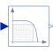
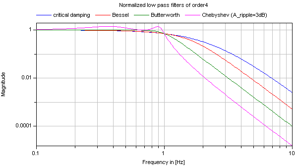
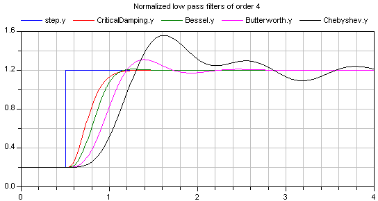
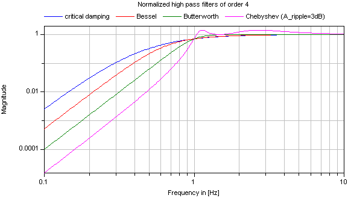
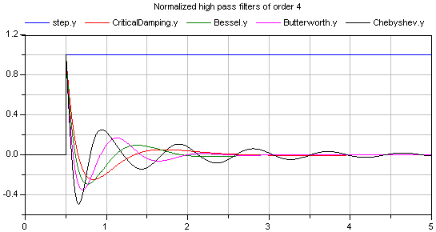
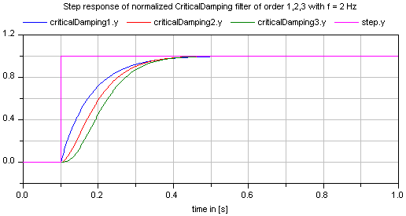
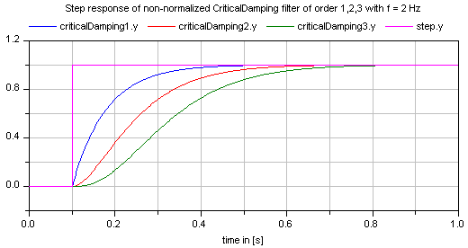

FilterContinuous low pass, high pass, band pass or band stop IIR-filter of type CriticalDamping, Bessel, Butterworth or ChebyshevI |

|
Information
This information is part of the Modelica Standard Library maintained by the Modelica Association.
This blocks models various types of filters:
low pass, high pass, band pass, and band stop filters
using various filter characteristics:
CriticalDamping, Bessel, Butterworth, Chebyshev Type I filters
By default, a filter block is initialized in steady-state, in order to avoid unwanted oscillations at the beginning. In special cases, it might be useful to select one of the other initialization options under tab "Advanced".
Typical frequency responses for the 4 supported low pass filter types are shown in the next figure:

The step responses of the same low pass filters are shown in the next figure, starting from a steady state initial filter with initial input = 0.2:

Obviously, the frequency responses give a somewhat wrong impression of the filter characteristics: Although Butterworth and Chebyshev filters have a significantly steeper magnitude as the CriticalDamping and Bessel filters, the step responses of the latter ones are much better. This means for example, that a CriticalDamping or a Bessel filter should be selected, if a filter is mainly used to make a non-linear inverse model realizable.
Typical frequency responses for the 4 supported high pass filter types are shown in the next figure:

The corresponding step responses of these high pass filters are shown in the next figure:

All filters are available in normalized (default) and non-normalized form. In the normalized form, the amplitude of the filter transfer function at the cut-off frequency f_cut is -3 dB (= 10^(-3/20) = 0.70794..). Note, when comparing the filters of this function with other software systems, the setting of "normalized" has to be selected appropriately. For example, the signal processing toolbox of MATLAB provides the filters in non-normalized form and therefore a comparison makes only sense, if normalized = false is set. A normalized filter is usually better suited for applications, since filters of different orders are "comparable", whereas non-normalized filters usually require to adapt the cut-off frequency, when the order of the filter is changed. See a comparison of "normalized" and "non-normalized" filters at hand of CriticalDamping filters of order 1,2,3:


Implementation
The filters are implemented in the following, reliable way:
- A prototype low pass filter with a cut-off angular frequency of 1 rad/s is constructed from the desired analogFilter and the desired normalization.
- This prototype low pass filter is transformed to the desired filterType and the desired cut-off frequency f_cut using a transformation on the Laplace variable "s".
- The resulting first and second order transfer functions are implemented in
state space form, using the "eigen value" representation of a transfer function:
// second order block with eigen values: a +/- jb der(x1) = a*x1 - b*x2 + (a^2 + b^2)/b*u; der(x2) = b*x1 + a*x2; y = x2;The dc-gain from the input to the output of this block is one and the selected states are in the order of the input (if "u" is in the order of "one", then the states are also in the order of "one"). In the "Advanced" tab, a "nominal" value for the input "u" can be given. If appropriately selected, the states are in the order of "one" and then step-size control is always appropriate.
References
- Tietze U., and Schenk C. (2002):
- Halbleiter-Schaltungstechnik. Springer Verlag, 12. Auflage, pp. 815-852.
Parameters (13)
| analogFilter |
Value: Modelica.Blocks.Types.AnalogFilter.CriticalDamping Type: AnalogFilter Description: Analog filter characteristics (CriticalDamping/Bessel/Butterworth/ChebyshevI) |
|---|---|
| filterType |
Value: Modelica.Blocks.Types.FilterType.LowPass Type: FilterType Description: Type of filter (LowPass/HighPass/BandPass/BandStop) |
| order |
Value: 2 Type: Integer Description: Order of filter |
| f_cut |
Value: Type: Frequency (Hz) Description: Cut-off frequency |
| gain |
Value: 1.0 Type: Real Description: Gain (= amplitude of frequency response at zero frequency) |
| A_ripple |
Value: 0.5 Type: Real (dB) Description: Pass band ripple for Chebyshev filter (otherwise not used); > 0 required |
| f_min |
Value: 0 Type: Frequency (Hz) Description: Band of band pass/stop filter is f_min (A=-3db*gain) .. f_cut (A=-3db*gain) |
| normalized |
Value: true Type: Boolean Description: = true, if amplitude at f_cut = -3db, otherwise unmodified filter |
| init |
Value: Modelica.Blocks.Types.Init.SteadyState Type: Init Description: Type of initialization (no init/steady state/initial state/initial output) |
| nx |
Value: if filterType == Modelica.Blocks.Types.FilterType.LowPass or filterType == Modelica.Blocks.Types.FilterType.HighPass then order else 2 * order Type: Integer |
| x_start |
Value: zeros(nx) Type: Real[nx] Description: Initial or guess values of states |
| y_start |
Value: 0 Type: Real Description: Initial value of output |
| u_nominal |
Value: 1.0 Type: Real Description: Nominal value of input (used for scaling the states) |
Connectors (3)
| u |
Type: RealInput Description: Connector of Real input signal |
|
|---|---|---|
| y |
Type: RealOutput Description: Connector of Real output signal |
|
| x |
Type: RealOutput[nx] Description: Filter states |
Used in Examples (7)
|
Modelica.Blocks.Examples
Demonstrates the Continuous.Filter block with various options |
|
|
Modelica.Blocks.Examples
Demonstrates the use of low pass filters to determine derivatives of filters |
|
|
Modelica.Blocks.Examples
Demonstrates to use the rise time instead of the cut-off frequency to define a filter |
|
|
Modelica.Electrical.Machines.Examples.SynchronousInductionMachines
Test example: ElectricalExcitedSynchronousInductionMachine with rectifier |
|
|
Modelica.Electrical.PowerConverters.Examples.DCAC.MultiPhaseTwoLevel
Test of pulse width modulation methods |
|
|
ThreePhaseTransformerWithRectifier Modelica.Magnetic.FluxTubes.Examples.Hysteresis
3 Phase transformer (including hysteresis effect) with rectifier |
|
|
Modelica.Magnetic.FundamentalWave.Examples.BasicMachines
Test example: ElectricalExcitedSynchronousInductionMachine with rectifier |
Used in Components (1)
|
Modelica.Fluid.Valves.BaseClasses
Base model for valves |